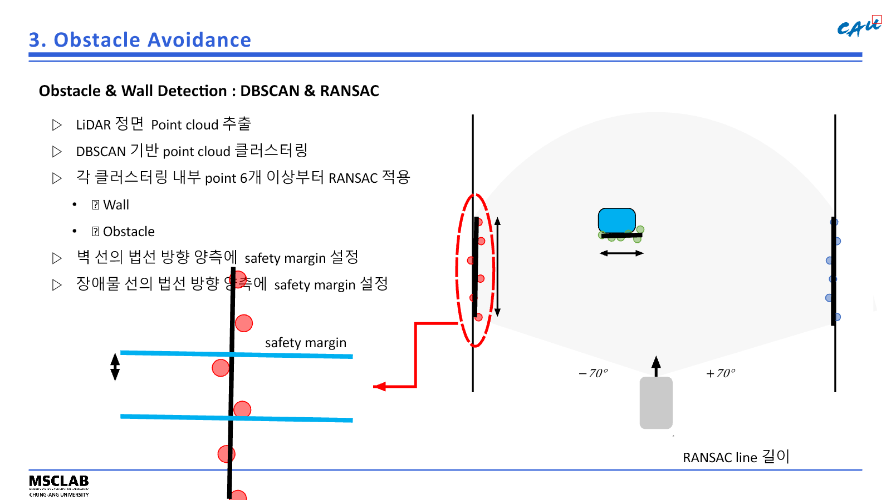
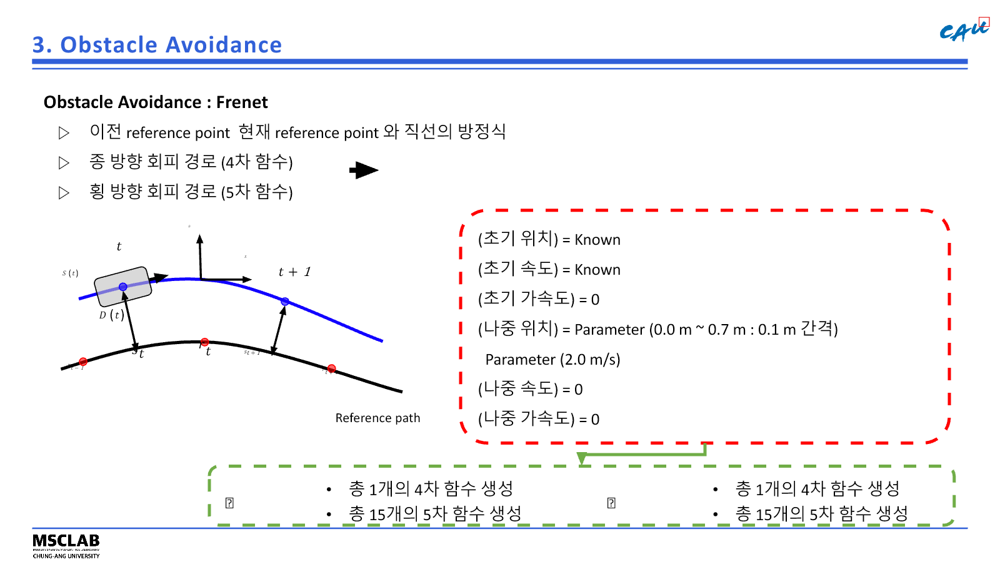
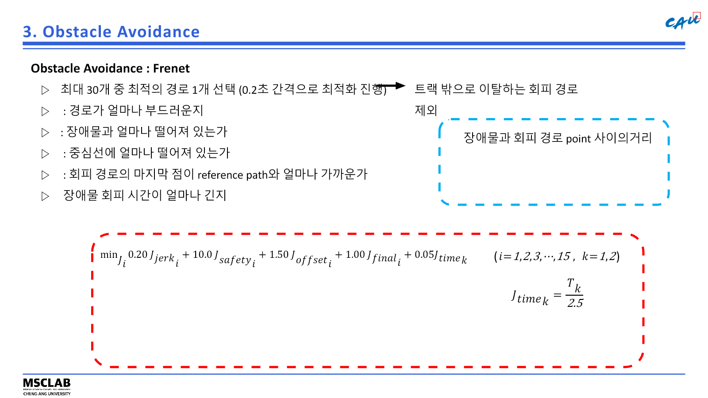

IFAC 2026 · AUTONOMOUS RACING
RoboRacer 장애물 인지·회피 경로계획
LiDAR 점군에서 벽과 장애물을 분리하고, 최대 30개 Frenet 후보 경로 가운데 안전성과 복귀 가능성을 함께 평가하는 ROS 2 회피 모듈.
- 기간
- 2026.07–08
- 담당
- 장애물 인지·로컬 경로계획 전체
- 기술
- ROS 2 · Python · DBSCAN · RANSAC · Frenet
- 결과
- 56개 팀 중 16강

01 / OWNERSHIP
담당 범위
5인 학생팀에서 장애물 회피 파이프라인 담당. 전역 주행과 위치추정 모듈의 출력을 입력으로 받아 LiDAR 인지, 회피 후보 생성, 경로 평가, 회피 후 복귀 판단까지 구현.
- 인지DBSCAN 군집화와 순차 RANSAC 기반 벽·장애물 분리
- 기하 처리차량 진행방향과 벽 방향을 반영한 동적 탐지 범위 산출
- 경로 생성4차·5차 다항식 기반 Frenet 후보 최대 30개 생성
- 경로 평가충돌·트랙 이탈 후보 제거와 비용 최소 경로 선택
- 상태 관리NORMAL·AVOID·RETURN 3상태 전환과 복귀 조건 설계
02 / PERCEPTION
벽·장애물 분리


- 벽 모델좌·우 점군의 선분 길이와 차량 진행방향을 반영한 안전여유 설정
- 장애물 모델벽 영역을 제외한 군집의 위치·폭·추적 ID 유지
- 범위 설정고정 숫자가 아닌 벽 기하에서 계산한 전방 탐지 범위
03 / PLANNING
Frenet 후보 평가


- 후보 수횡방향 15개 × 종방향 2개, 최대 30개
- 제외 조건벽·장애물 충돌, 안전여유 침범, 트랙 바깥 이탈
- 선택 기준장애물과의 거리·기준선 편차·주행 부드러움의 가중 비용 최소화
04 / FIELD VIDEO
실차 주행
원본 촬영본과 발표자료 내장 영상을 비교한 뒤 차량·코스가 가장 분명하고 사람 얼굴 노출이 적은 두 구간 선별.
05 / RESULT
결과와 한계
TOP 16
IFAC RoboRacer 56개 팀 중 16강
대회 기간 2026.08.24–27 · 장애물 회피 모듈 개입 구간 충돌 없이 통과
- 검증 결과장애물 회피 모듈이 개입한 시험·경기 구간의 충돌 없는 통과
- 발생 실패차량 충돌 이후 Cartographer 위치추정 붕괴로 후속 주행 중단
- 사전 판단고속화와 지도 안정성 사이의 trade-off를 팀 내 사전 인지
- 개선 방향충돌·급격한 자세변화 이후 로컬라이제이션 건전성 판정과 복구 상태 추가
06 / SYSTEM
차량 구성